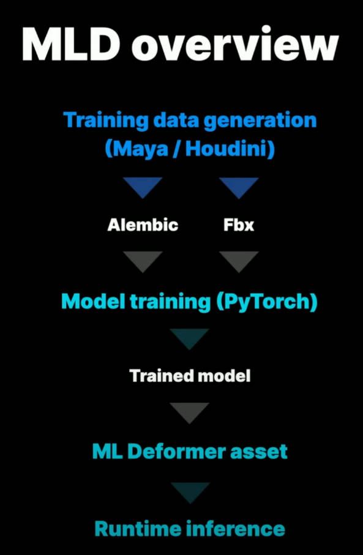
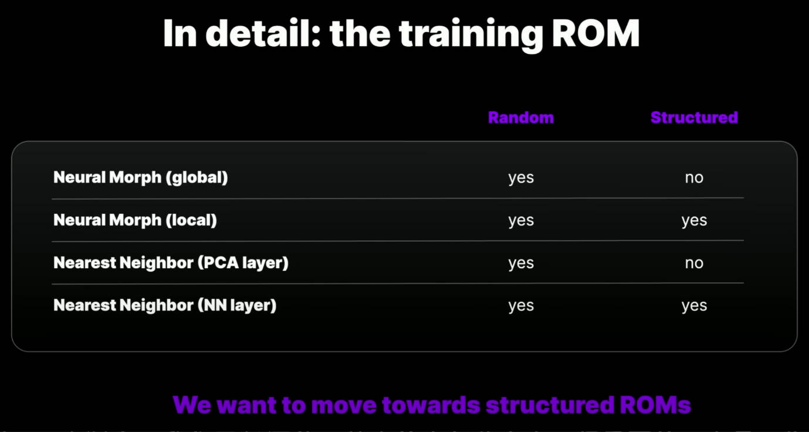

ClothSimulation
Table of Contents
ClothSimulation note.
<!– more –>
ClothSimulation
Base
MagicaCloth
Machine Learning Deformer
UE5 ML Deformer
总结
- 效果非常好，接近 Houdini 中离线生成的效果
- 基于缩小线性蒙皮和离线模拟之间的差别而设计的神经网络
- 不适合多套衣服复用同一动画
- 神经网络和模型是一一对应的，换衣服就需要换训练得到的神经网络
- 不同的衣服，运动形态不同，动画自然不同
- Tips: 游戏中多套衣服复用同一动画，其本质是衣服不通过动画来驱动，而通过物理模拟来驱动
- Tips: 游戏中多套衣服复用同一动画，其本质是衣服不通过动画来驱动，而通过物理模拟来驱动
- 神经网络和模型是一一对应的，换衣服就需要换训练得到的神经网络
- 基于缩小线性蒙皮和离线模拟之间的差别而设计的神经网络
- 工作流比较复杂，需要利用 Houdini 制作离线生成的资产，需要神经网络训练
- UE5 没有公布其 Houdini 制作工具
- 神经网络训练可能需要多次迭代
- UE5 没有公布其 Houdini 制作工具
- 布料模拟性能消耗比较高，肉体模拟性能消耗相对不高。
- UE5 展示 Demo 在 PS5 平台，性能如下
- 上衣 CPU 0.05ms，GPU 0.49 ms, 内存 50.9MB
- 裤子 CPU 0.08ms, GPU 0.8-1.1ms，内存 140.6MB
- 上半身肌肉 CPU 0.02ms, GPU 0.29 ms, 内存 18.8MB
- 上衣 CPU 0.05ms，GPU 0.49 ms, 内存 50.9MB
- UE5 展示 Demo 在 PS5 平台，性能如下
- 目前模型对错误不友好
- 若动画范围超出训练集范围，会导致奇怪形变
- 目前没有自动错误检查工具，需要人肉排查错误
- 若动画范围超出训练集范围，会导致奇怪形变
- 目前 Unity 没有官方解决方案
Usage
整个工作流程如下：
- 首先，需要使用 UE 提供的 maya 插件生成随机的姿势(ROM)集合
- 其次，需要使用 Houdini 对随机姿势进行布料，肌肉模拟
- 然后，在 UE5 中进行神经网络训练，得到可用的神经网络。创建 MLDeformer Asset。
- 最后，创建 Blurprint Actor 关联 Skeleton 和 MLDeformer
Tips:
推荐在 Maya 中生成 5000-50000 帧数据。Unreal 默认设置是 25000，训练数据集少会导致结果很差。训练数据集越大训练时间会越长。
UE5 MLDeformer Demo 中，训练数据如下：（将.abc 文件导入 UE5 中时，导入类型选 Geometry Cache）

UE5 MLDeformer Demo 中，PC Editor 下实时性能数据如下：
官方分享中，PS5 实时性能数据如下：
技术原理
Asset construction
在 MLDeformer Demo 中，角色的模型和肌肉骨骼系统，都是通过 3D 扫描获得的。
- MRI 是指 magnetic resonance imaging，核磁共振成像
将扫描数据导入到 Houdini，然后建立完整的肌肉和肉体模拟。使用 Houdini 来生成训练数据。尽管，使用的很多 Houdini 工具还在开发中，得到的结果已经非常的好了，未来这些工具会更加优秀。
- Houdini Vellum 是 Houdini 中用于肌肉和布料模拟的工具。
神经网络可以将一些输入值映射为一些对应的输出数据。对于 MLDeformer 来说，输入就是关节朝向，输出就是变形后的模型，变形后的模型和我们的训练数据相匹配。为了效率我们将模型变形编码为一系列学习到的 Morph Target Shapes(其实就是 unity 中所说的 Blend Shape)。MLDeformer 的神经网络的输出是这些 Blend Shapes 的权重。
在 Unreal 中，我们有多种不同类型的模型可供使用。每种都使用了不同的机器学习技术，每种都有各自的强项和弱点。没有单个模型可以满足所有的应用需求。我们使用了其中的两种模型，创建了三个 deformers。
NeuralMorphModel 适用于肉体模拟，但是不适用于布料模拟。
NearestNeighborModel 适用于布料模拟。该模型可以更好地重建复杂的褶皱和皱纹。
Demo 中角色有 315000 个顶点，骨骼数量为 91，分辨率非常高啊。每个模型训练大概会需要 50 多分钟。如果你的 GPU 支持 CUDA，你可以开启 GPU 加速。
Machine Learning Deformer
ML Deformer 原理概览图如下：

每种 Deformer 都以同一角色的两类数据为输入。第一种数据只是角色关节结构和线性蒙皮，该数据会作为 UE 引擎中的 SkeletalMesh asset。第二种数据则是 Houdini 中生成的肌肉，肉体以及布料模拟。根据你的技术和设计目标，可能需要学习非常多的变形。
基本的目标是在很多 poses 范围内学习前面所提的两种数据之间的差别，然后将这些信息进行压缩，从而可以实时计算。这就是训练的过程。
最终得到的结果是一个 ML 网络以及打包到 ML Deformer asset 中的一系列 targets。我们将其应用于我们的 skeletal mesh，然后做动画，就会和 Houdini 中模拟的结果很近似了。
我们需要给模型很多该角色多种不同姿势的例子，这样模型才能学习到在广泛的动画中应该如何形变。这就是 Random of Motion (简称 ROM)训练。需要注意的是，这些模型只能学习静态形变，他们无法学习动态属性。但是，Houdini 中的肌肉，肉体以及布料模拟则是动态的。肌肉会受到重力和惯性影响，以不同方式变换为同一个姿势也会导致衣服有不同的褶皱。这就会有问题，我们在学习时学习的只是姿势的变化量。多个不同变化量结果将被平均，所以，有时机器学习结果可能缺乏我们希望从源数据中看到的很多清晰度和细节。那么我们如何解决这个问题呢？
在 Houdini 模拟中，连续的测试动画不一定是生成 ML 训练数据的最佳设置。所以这里的目标不一定是使模拟看起来好,而是尽量减少具有共享特征的姿势的结果之间的差异。
我们希望以同样的方式促进褶皱的形成，但不希望训练数据中出现重力或惯性的影响。例如，当角色抬起腿时，我们想要模拟肌肉放松和收缩，并且想要肌肉之间的碰撞。还有一个额外的复杂情况是，训练使用的是随机姿势，这意味着一帧与下一帧之间的姿势差异相当大。我们无法按顺序进行模拟，因为，最终的速度对于模拟来说太高了。
为了解决这个问题，我们实施了 10 帧热身来适应每个姿势。对于训练 ROM 中的每个姿势，我们将动画设置到七帧以上的位置，然后让模拟稳定在三帧，然后保存一帧。这些额外的帧是在 Houdini 中以程序化方式生成的。
What models are available?
那么让我们详细看看这些模型。
local Neural Morph model 针对每个单独的输入会尝试生成更多的目标。这导致了许多小的局部网络。
global Neural Morph Model 生成一个单一的全连接网络。
局部比全局有一些很大的优势，因此，局部被设置为默认的方法。
首先是性能优势，如下图所示，图中的神经网络中，神经元之间的每条线都代表了计算成本。所以，当我们增加更多的输入、输出或层时，全局模型的成本会迅速增加、 而局部模型对网络尺寸的增加有更好的扩展性。
然而，全局模式有可能看得更远，而不仅仅是在骨头周围。因此，在某些情况下，它可以更好地学习变形，而这些变形是多个输入的结果。为了改善这些情况下局部模型的重建，我们实现了关联骨骼。这允许模型在用户定义的特定情况下考虑多个输入。对于上半身，我们在锁骨和肱骨之间建立了关联。这大大改善了肩部区域的重建，同时保留了本地模型的几乎所有性能特征。
另一个关键优势是，local model 可以更快地收敛到一个良好的通用模型 而且比全局的训练数据少。对于上半身的肉体，我们在大约 7,000 帧上进行了训练。但我估计，如果使用全局模式，我们还需要大约 50%的数据才能得到类似的结果。
The Nearest Neighbor model 专门用于布料的重建。布料的重建是一个真正的挑战，因为它是高度混乱的，而且本质上连接非常多。在布料方面，The Nearest Neighbor model 比 Neural Morph model 更出色。
该模块从一个初始的 PCA 层开始，用一大组随机姿势进行训练。对于上层服装，使用了和肉体相同的一组姿势。然后在此之上，我们添加一个额外的模拟固定姿势层，这些是从我们的目标动画数据库中获取的。这就是 Nearest Neighbor 数据集。
在动画制作过程中，最近邻函数会计算角色姿势并将该组中最接近的形状应用于角色。为了帮助生成最佳的 Nearest Neighbor 姿势，我们实现了 k 均值姿势生成器(k-means pose generator)。给定一组目标动画（通常，这是你们的游戏或剧情动画) 以及最大姿势值，它将生成最有效地覆盖动画空间的一组姿势。我们在 Houdini 中使用这些附加姿势进行布料模拟，然后使用这些数据训练附加的 Nearest Neighbor set。
Workflow
下图是工作流总览：
第一步，生成训练 ROM 动画。这样做的目的是为训练过程提供大量示例，说明我们希望变形在许多不同姿势下看起来是什么样子。 因此，目前最简单的方法是使用我们的 MayaposeGen 工具，其可以生成随机动画。
第二步，使用该 ROM 生成训练数据。 所以我们将在两个地方使用它。
首先，我们将把它应用到我们简单的线性蒙皮角色上，然后导出它的 FBX。
其次，我们将把它应用到我们复杂的离线角色上。对我们来说，就是 Houdini 的肌肉和布料模拟。我们将为每一帧运行模拟，并将结果输出为 Alembic。
第三步，FBX 和 Alembic 导入到 Engine 中。 我们设置训练参数，然后进行训练。
完成后，我们将使用新的动画来测试结果。我们应该始终使用与我们训练的动画不同的动画进行测试。这使我们能够了解模型是否已正确泛化，并且能够在应用的任何动画中表现良好。
如果此时，某些特定姿势无法很好地重建，我们可以返回 ROM。 我们可以添加姿势来提供额外的覆盖范围，并且我们可以再次运行训练过程。 因此，获得良好结果是一个迭代过程。
那么让我们在编辑器中看看这个过程。
我要做的第一件事就是创建我们的 ML Deformer 资产。 打开它，可以看到如下界面:
下面列出几个比较重要的设置：
Inputs and Output/Include Bones 表示使用包含的骨骼作为输入数据
Inputs and Output/Include Curves 表示使用包含的曲线作为输入数据
Bones/Animated Bones Only 按钮表示只会考虑做动画的骨骼，该选项可以
Bone Groups 用于设置关联骨骼
TraningSettings/Mode 表示 Local 或 Global 模式
Num Morphs Per Bone/Curve/Group 表示 Morphs 数量
Number Iterations 表示 训练的迭代次数
TraningSettings/Advanced/Num Hidden Layers 表示隐藏层数量，增加隐藏层的数量使网络有可能学习更复杂的变形，但会增加 CPU 推理时间
设置完成就可以进行训练了。
In detail: the training ROM
这些模型擅长插值(interpolation)，但在外推（extrapolation）方面却很糟糕。 举一个简单的例子，如果游戏动画将肘部从 0 度旋转到 140 度，我们不需要训练数据中有每个旋转度数的示例，但它确实需要覆盖整个范围。因此，如果模型重建不佳，两个最可能的原因是没有使用足够的训练数据导致模型尚未泛化，或者动画将角色推到我们训练的姿势空间之外，然后网络不知道如何处理。当发生这种情况时，变形器无法优雅地处理它，其不会仅仅停止添加增量，实际上你会得到一些非常讨厌的变形。在设置训练数据时，很容易因做出错误的假设而陷入困境。你可能假设肘部进行平面旋转，但忘记了动画师喜欢破坏东西，另外性能缓存数据通常在所有三个轴上都有较小的旋转值。如果你的训练数据没有考虑到这些旋转，你就会遇到问题。
我们遇到的问题之一是由剧情动画中锁骨过度扭曲引起的。训练 ROM 假设总范围约为 20 度，而动画则远远超出了该范围（动画旋转了 70 度）。如下图，我们可以在我们的动画曲线中看到这一点。左边是我们用于训练的随机数据，右边是剧情动画。可以看到剧情动画数据的上限和下限超出了训练范围，结果导致奇怪的变形。
目前，使用我们的 MayaposeGen 工具生成随机训练 ROM 是创建训练数据的最简单方法，我们可以确信这些数据覆盖了角色的完整姿势空间。 对于参与变形的每个关节，我们为每个旋转轴定义一个最小、最大旋转值。 然后，poseGen 工具根据这些值生成随机动画。但这是一种生硬的工具，它不了解生物力学，我们最终会产生大量的姿势，这些姿势在物理上不合理，而且对训练没有用。 如下图所示，该骨骼沿着脊柱产生了反向旋转。 锁骨和肱骨之间的生物力学关系也不合理。所以，生成训练数据可能是一个真正的挑战。
我们希望通过减少不良姿势的数量来使我们的训练 ROM 尽可能高效。在 Maya 中，我们设置了一个简单的集驱动关键系统来驱动脊柱关节，然后我们使用这些属性生成随机数据。 这确保了脊柱上的姿势保持在物理上合理的空间内。 我们还运行了一个后处理脚本，以根据肱骨的方向匹配锁骨旋转值。通过提高训练 ROM 的效率（包含更少的不良姿势），我们可以使用更小的训练 ROM。
我们经常被问到训练 ROM 的结构。 那么它必须是随机的吗？ 我们可以使用连续的运动范围（也许来自运动捕捉）吗？ 下图显示了模型和训练 ROM 类型之间的依赖关系。

我们实际上采用了一种混合方法。我们使用了不到 7,000 帧的随机姿势。这为我们提供了通用模型，使其能够在应用一系列动画的情况下表现良好。我们甚至可以使用 Control Rig 来操纵单个肢体，变形效果非常好，模型很稳定。
然后，我们使用从各种动作捕捉中获取的一小组附加姿势来完善该模型。所以目前，这是我倾向于推荐的方法。那就是使用随机数据集构建可靠的广义模型。如果需要，可以通过添加游戏或剧情动画中的关键英雄姿势来完善结果。
最终我们确实希望减少使用随机数据的需求。我们希望转向使用更小、更高效、结构化的连续运动 ROM。 我们认为这将为人们提供一种更直观的方法来生成模拟数据——而不是训练数据。当使用模拟数据作为源时，还有工作流程优势。本地神经变形模型已经为此提供了一些支持，我们确实希望在 5.2 版本中提供一个示例结构化训练 ROM。
Guides
为了获得更好的结果，需要考虑以下几点。
实际上，我们已经涵盖了其中的大部分内容，但重要的一点是，在你的基础资源中要包含 twist joints。对于那些不熟悉索具的人来说，这些是额外的辅助关节，可以将扭曲分布在上臂、下臂和腿部等区域。它消除了我们在上图看到的糖果包装纸塌陷的效果。如果没有这些，ML Deformer 纠正该姿势需要应用的增量会相当大。ML Deformer 实际上是一种有损压缩。对于像这样非常大的增量，该错误可能会变得明显，并且你可能不会得到很好的结果。但通过包含 twist joints，我们试图重建的 delta size 要小得多。任何存在的错误都不会被注意到。
Performance
下图左侧给出了我们使用的三个变形器在 PS5 上的性能，右侧是对性能影响最大的训练参数表。
我们对肉体使用了 local NeuralMorphModel，对服装使用了 Nearest Neighbor Model。 在 Neural Morph 上运行的肉体性能非常出色。Nearest Neighbor Model 的成本则稍高，这是由于附加的最近邻数据集增加了内存使用量和 GPU 时间。
Delta Zero Threshold 会从变形目标集中剔除小增量，这会减少内存和 GPU 时间，但在某些情况下可能会引入 artifacts
Compression level 较高的 level 会减低内存使用，但可能会引入 artifacts
Num morph targets 增加变形目标的数量有可能获得更好的重建结果，但内存和 GPU 成本更高
Network dimensions 增加网络维度有可能学习更复杂的变形，但代价是增加 CPU 推理时间
PCACoeffNum 可以被视为与变形目标的数量大致相似
NearestNeighborDataSize 可以被视为与变形目标的数量大致相似
总而言之，如果有正确的训练数据，当前模型的重建和性能实际上相当不错。因此，目前的主要挑战是工作流程和生成训练数据。 这对可访问性和可扩展性有很大影响。
我们今天在这里展示的内容对于英雄角色来说是可以实现的，但我们需要改进工作流程以将其扩展到次要角色。 我们需要随机 ROM 的替代品。我们需要对稍微超出训练空间不太敏感的模型。我们需要支持动画和几何缓存的多个 Pass。我们需要更好的调试和可视化工具，以帮助在出现问题时找到问题的解决方案。
参考资料
Unity ML Deformer
Usage
参考资料
- Unity Neural network https://docs.unity3d.com/Packages/com.unity.barracuda@3.0/manual/index.html
- Unity ML Deformer Video https://vimeo.com/567556035
- Fast and Deep Deformation Approximations http://graphics.berkeley.edu/papers/Bailey-FDD-2018-08/
- Simulate stylized characters for games with Ziva VFX and machine learning https://blog.unity.com/games/simulate-stylized-characters-with-ziva-vfx-and-machine-learning?utm_source=twitter&utm_medium=social&utm_campaign=digitaltwin_global_blog_2023-07-05_wetazivasimilatecharacters
参考资料
- 啥是 XPBD (Extended PBD) https://zhuanlan.zhihu.com/p/81741028